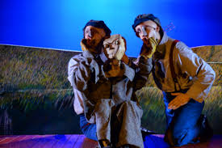
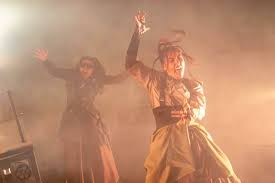
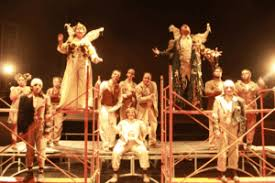

Nuestro trabajo en teatro
El teatro es uno de los pilares del Centro Cultural. Aquí se cruzan la memoria portuaria, las historias del barrio y las experiencias de las y los trabajadores.
Buscamos que cada montaje sea un espacio de encuentro, reflexión y afecto, donde el público pueda reconocerse y también imaginar otros futuros posibles.
Talleres y procesos formativos
- Taller de actuación para jóvenes y personas adultas.
- Laboratorio de creación escénica con enfoque comunitario.
- Entrenamiento en voz, cuerpo y presencia escénica.
- Lecturas dramatizadas y ejercicios de escritura teatral.
Galería de teatro


